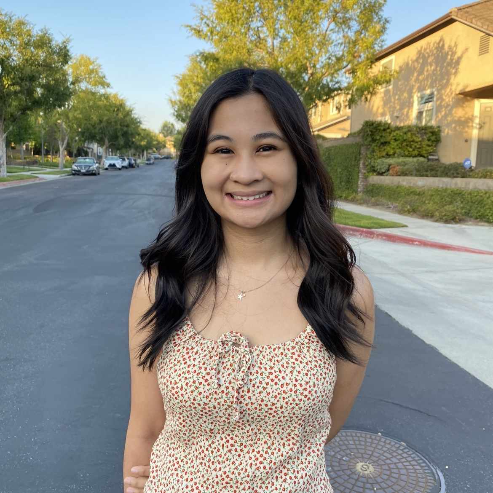

Trinah Maulion
Computer Science Student @ UCR
LinkedIn |
Instagram |
Github |
Email
About Me
Hello, I'm Trinah! I am from Fullerton, CA and I currently attend UCR as a Computer Science major.
Aside from coding, some of my other hobbies include cooking, baking, embroidering, designing, and
traveling! In the future, I hope to combine my problem-solving skills and creativity to code and
design projects that will benefit society and solve important issues.
Work Experience
| Prytaneum, UX/UI Designer |
July 2022 - Present |
- Works with the UX/UI team to implement the design of new features on Prytaneum's platform
|
| Aidtree, Business Development Intern |
June 2018 - July 2018 |
- Observed numerous business meetings with the Aidtree CEO in order to acquire potential clients for the startup
- Designed user interface mockups for the website and a pitch deck powerpoint presentation for potential investors
- Constructed pages on the website and posted on Aidtree's Instagram and Facebook to increase engagement with audience
|
Organization Activities
| Design@UCR, Marketing Director |
March 2021 - Present |
- Designs aesthetic social media posts, flyers, and other visuals to promote the organization's mission in design
- Promotes the organization's upcoming events and increases Instagram content interaction with followers by 29%
- Leads the organization's rebranding in focusing on a theme that aligns closely with its unique culture and identity
|
| Rose Hack, Marketing Lead |
April 2020 - February 2022 |
- Designed various graphics for the event to promote Rose Hack's mission and encourage minorities to participate
- Increased weekly engagement on Rose Hack's social media platforms through engaging and interactive posts by 45%
- Improved applicant count by reaching out to hackathons nationwide and creating valuable marketing partnerships
|
Education
| University of California, Riverside |
B.S. Computer Science |
September 2019 - December 2022 |
| Troy High School |
High School Diploma |
August 2015 - May 2019 |
Coursework
- CS105 Data Analysis Methods
- CS180 Introduction to Software Engineering
- CS110 Web Development
- CS175 Entrepreneurship in Computing
Skills
- Languages: C/C++, Python, Javascript, HTML/CSS
- Graphical: Adobe Illustrator, Adobe Photoshop, Figma
- Tools: Git, Github, VS Code
Projects
| SpotifyU |
April - June 2022 |
- Performed analysis on a user's input of favorite track traits, artists, and songs using a Spotify Dataset
- Connected the backend and frontend features of our website and worked on the UX/UI design
- Tools/Technologies: HTML/CSS, Javascript, Node.js, Express.js
|
| Text Analysis of Airbnb Reviews |
February - March 2022 |
- Performed text analysis on an Airbnb Reviews Dataset in LA to determine what factors make a good Airbnb stay
- Implemented TF-IDF to calculate the relevance of words in a review and determined the polarity of each review
- Tools/Technologies: Python
|
| Exam Helper |
November - December 2022 |
- Terminal based program to help students keep track and study for their exams through quizzes and flashcards
- Implemented the facade design pattern by coding the menu feature to help users easily navigate Exam Helper
- Tools/Technologies: C++, Google's Unit Test Framework (gtest) for C++
|